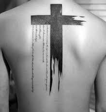

TATOOS
A tattoo is a form of body modification where a design is made by inserting ink, dyes and pigments, either indelible or temporary, into the dermis layer of the skin to change the pigment. The art of making tattoos is tattooing. Tattoos fall into three broad categories: purely decorative; symbolic; pictorial.
Traumatic tatoos
Traumatic tattoos According to George Orwell, coal miners could develop characteristic tattoos owing to coal dust getting into wounds. This can also occur with substances like gunpowder. Similarly, a traumatic tattoo occurs when a substance such as asphalt is rubbed into a wound as the result of some kind of accident or trauma.These are particularly difficult to remove as they tend to be spread across several layers of skin, and scarring or permanent discoloration is almost unavoidable depending on the location. An amalgam tattoo is when amalgam particles are implanted in to the soft tissues of the mouth, usually the gums, during dental filling placement or removal. Another example of such accidental tattoos is the result of a deliberate or accidental stabbing with a pencil or pen, leaving graphite or ink beneath the skin.
Subcultural connotations
Tattooing among females of the Koita people of Papua New Guinea traditionally began at age five and was added to each year, with the V-shaped tattoo on the chest indicating that she had reached marriageable age. Photo taken in 1912. Many tattoos serve as rites of passage, marks of status and rank, symbols of religious and spiritual devotion, decorations for bravery, sexual lures and marks of fertility, pledges of love, amulets and talismans, protection, and as punishment, like the marks of outcasts, slaves and convicts. The symbolism and impact of tattoos varies in different places and cultures. Tattoos may show how a person feels about a relative (commonly mother/father or daughter/son) or about an unrelated person. Today, people choose to be tattooed for artistic, cosmetic, sentimental/memorial, religious, and magical reasons, and to symbolize their belonging to or identification with particular groups, including criminal gangs (see criminal tattoos) or a particular ethnic group or law-abiding subculture. Popular verses include John 3:16, Philippians 4:13, and Psalm 23. Extensive decorative tattooing is common among members of traditional freak shows and by performance artists who follow in their tradition.
Identification
People have also been forcibly tattooed.
A well-known example is the Nazi practice of forcibly tattooing concentration camp inmates with identification numbers during the Holocaust as part of the Nazis' identification system, beginning in fall 1941. The SS introduced the practice at Auschwitz concentration camp in order to identify the bodies of registered prisoners in the concentration camps. During registration, guards would pierce the outlines of the serial-number digits onto the prisoners' arms. Of the Nazi concentration camps, only Auschwitz put tattoos on inmates. The tattoo was the prisoner's camp number, sometimes with a special symbol added: some Jews had a triangle, and Romani had the letter "Z" (from German Zigeuner for "Gypsy"). In May 1944, the Jewish men received the letters "A" or "B" to indicate particular series of numbers.
Tattoos have also been used for identification in other ways. As early as the Zhou, Chinese authorities would employ facial tattoos as a punishment for certain crimes or to mark prisoners or slaves. During the Roman Empire, gladiators and slaves were tattooed: exported slaves were tattooed with the words "tax paid", and it was a common practice to tattoo "Stop me, I'm a runaway" on their foreheads. Owing to the Biblical strictures against the practice,[20] Emperor Constantine I banned tattooing the face around AD 330, and the Second Council of Nicaea banned all body markings as a pagan practice in AD 787.
In the period of early contact between the Māori and Europeans, the Māori people hunted and decapitated each other for their moko tattoos, which they traded for European items including axes and firearms.[22] Moko tattoos were facial designs worn to indicate lineage, social position, and status within the tribe. The tattoo art was a sacred marker of identity among the Māori and also referred to as a vehicle for storing one's tapu, or spiritual being, in the afterlife.
Tattoo marking a deserter from the British Army; skin removed post-mortem
Tattoos are sometimes used by forensic pathologists to help them identify burned, putrefied, or mutilated bodies. As tattoo pigment lies encapsulated deep in the skin, tattoos are not easily destroyed even when the skin is burned.
Tattoos are also placed on animals, though rarely for decorative reasons. Pets, show animals, thoroughbred horses, and livestock are sometimes tattooed with identification and other marks. Tattooing with a 'slap mark' on the shoulder or on the ear is the standard identification method in commercial pig farming. Branding is used for similar reasons and is often performed without anesthesia, but is different from tattooing as no ink or dye is inserted during the process, the mark instead being caused by permanent scarring of the skin. Pet dogs and cats are sometimes tattooed with a serial number (usually in the ear, or on the inner thigh) via which their owners can be identified. However, the use of a microchip has become an increasingly popular choice and since 2016 is a legal requirement for all 8.5 million pet dogs in the UK.
Cosmetic
Permanent makeup is the use of tattoos to enhance eyebrows, lips (liner and/or lipstick), eyes (liner), and even moles, usually with natural colors, as the designs are intended to resemble makeup.
A growing trend in the US and UK is to place artistic tatoos over the surgical scars of a mastectomy. "More women are choosing not to reconstruct after a mastectomy and tattoo over the scar tissue instead.The mastectomy tattoo will become just another option for post cancer patients and a truly personal way of regaining control over post cancer bodies. However, the tattooing of nipples on reconstructed breasts remains in high demand.
Medical
edical tattoos are used to ensure instruments are properly located for repeated application of radiotherapy and for the areola in some forms of breast reconstruction. Tattooing has also been used to convey medical information about the wearer (e.g., blood group, medical condition, etc.). Additionally, tattoos are used in skin tones to cover vitiligo, a skin pigmentation disorder. SS blood group tattoos (German: Blutgruppentätowierung) were worn by members of the Waffen-SS in Nazi Germany during World War II to identify the individual's blood type. After the war, the tattoo was taken to be prima facie, if not perfect, evidence of being part of the Waffen-SS, leading to potential arrest and prosecution. This led a number of ex-Waffen-SS to shoot themselves through the arm with a gun, removing the tattoo and leaving scars like the ones resulting from pox inoculation, making the removal less obvious. Tattoos were probably also used in ancient medicine as part of the treatment of the patient. In 1898, Daniel Fouquet, a medical doctor, wrote an article on "medical tattooing" practices in Ancient Egypt, in which he describes the tattooed markings on the female mummies found at the Deir el-Bahari site. He speculated that the tattoos and other scarifications observed on the bodies may have served a medicinal or therapeutic purpose: "The examination of these scars, some white, others blue, leaves in no doubt that they are not, in essence, ornament, but an established treatment for a condition of the pelvis, very probably chronic pelvic peritonitis."
Protection papers
Protection papers were used by American sailors to prevent themselves from being taken off American ships and impressed into the Royal Navy. These were simple documents that described the sailor as being an American sailor. Many of the protection certificates were so general, and it was so easy to abuse the system, that many impressment officers of the Royal Navy paid no attention to them. In applying for a duplicate Seaman's Protection Certificate in 1817, James Francis stated that he 'had a protection granted him by the Collector of this Port on or about 12 March 1806 which was torn up and destroyed by a British Captain when at sea.' [64] One way of making them more specific was to describe a tattoo, which is highly personal, and thus use that description to identify the seaman. As a result, many of the later certificates carried information about tattoos and scars, as well as other specific information. This also perhaps led to an increase and proliferation of tattoos among American seamen. Frequently their 'protection papers' made reference to tattoos, clear evidence that individual was a seafaring man; rarely did members of the general public adorn themselves with tattoos. In the late eighteenth and early nineteenth centuries, tattoos were as much about self-expression as they were about having a unique way to identify a sailor's body should he be lost at sea or impressed by the British navy. The best source for early American tattoos is the protection papers issued following a 1796 congressional act to safeguard American seamen from impressment. These proto-passports catalogued tattoos alongside birthmarks, scars, race, and height. Using simple techniques and tools, tattoo artists in the early republic typically worked on board ships using anything available as pigments, even gunpowder and urine. Men marked their arms and hands with initials of themselves and loved ones, significant dates, symbols of the seafaring life, liberty poles, crucifixes, and other symbols."
Freedom papers
Because these protection papers were used to define freemen and citizenship, many black sailors and other men also used them to show that they were freemen if they were stopped by officials or slave catchers. They also called them "free papers" because they certified their non-slave status. Many of the freed blacks used descriptions of tattoos for identification purposes on their freedom papers.
PROCESS
Tattooing involves the placement of pigment into the skin's dermis, the layer of dermal tissue underlying the epidermis. After initial injection, pigment is dispersed throughout a homogenized damaged layer down through the epidermis and upper dermis, in both of which the presence of foreign material activates the immune system's phagocytes to engulf the pigment particles. As healing proceeds, the damaged epidermis flakes away (eliminating surface pigment) while deeper in the skin granulation tissue forms, which is later converted to connective tissue by collagen growth. This mends the upper dermis, where pigment remains trapped within successive generations of macrophages, ultimately concentrating in a layer just below the dermis/epidermis boundary. Its presence there is stable, but in the long term (decades) the pigment tends to migrate deeper into the dermis, accounting for the degraded detail of old tattoos.
A two coil tattoo machine
Some tribal cultures traditionally created tattoos by cutting designs into the skin and rubbing the resulting wound with ink, ashes or other agents; some cultures continue this practice, which may be an adjunct to scarification. Some cultures create tattooed marks by hand-tapping the ink into the skin using sharpened sticks or animal bones (made into needles) with clay formed disks or, in modern times, actual needles.
The most common method of tattooing in modern times is the electric tattoo machine, which inserts ink into the skin via a single needle or a group of needles that are soldered onto a bar, which is attached to an oscillating unit. The unit rapidly and repeatedly drives the needles in and out of the skin, usually 80 to 150 times a second. The needles are single-use needles that come packaged individually.
Tattooing is regulated in many countries because of the associated health risks to client and practitioner, specifically local infections and virus transmission. Disposable plastic aprons and eye protection can be worn depending on the risk of blood or other secretions splashing into the eyes or clothing of the tattooist. Hand hygiene, assessment of risks and appropriate disposal of all sharp objects and materials contaminated with blood are crucial areas. The tattoo artist must wash his or her hands and must also wash the area that will be tattooed. Gloves must be worn at all times and the wound must be wiped frequently with a wet disposable towel of some kind. All equipment must be sterilized in a certified autoclave before and after every use. It is good practice to provide clients with a printed consent form that outlines risks and complications as well as instructions for after care.
HISTORICAL ASSOCIATIONS
The Government of Meiji Japan had outlawed tattoos in the 19th century, a prohibition that stood for 70 years before being repealed in 1948.As of 6 June 2012, all new tattoos are forbidden for employees of the city of Osaka. Existing tattoos are required to be covered with proper clothing. The regulations were added to Osaka's ethical codes, and employees with tattoos were encouraged to have them removed. This was done because of the strong connection of tattoos with the yakuza, or Japanese organized crime, after an Osaka official in February 2012 threatened a schoolchild by showing his tattoo.
Tattoos had negative connotations in historical China, where criminals often had been marked by tattooing. The association of tattoos with criminals was transmitted from China to influence Japan. Today, tattoos have remained a taboo in Chinese society.
The Romans tattooed criminals and slaves, and in the 19th century released U.S. convicts, Australian convicts and British army deserters were identified by tattoos. Prisoners in Nazi concentration camps were tattooed with an identification number. Today, many prison inmates still tattoo themselves as an indication of time spent in prison.
Native Americans also used tattoos to represent their tribe. Catholic Croats of Bosnia used religious Christian tattooing, especially of children and women, for protection against conversion to Islam during the Ottoman rule in the Balkans
MODERN ASSOCIATIONS
Tattoos are strongly empirically associated with deviance, personality disorders and criminality.Although the general acceptance of tattoos is on the rise in Western society, they still carry a heavy stigma among certain social groups.[citation needed] Tattoos are generally considered an important part of the culture of the Russian mafia.
Current cultural understandings of tattoos in Europe and North America have been greatly influenced by long-standing stereotypes based on deviant social groups in the 19th and 20th centuries. Particularly in North America, tattoos have been associated with stereotypes, folklore and racism. Not until the 1960s and 1970s did people associate tattoos with such societal outcasts as bikers and prisoners. Today, in the United States many prisoners and criminal gangs use distinctive tattoos to indicate facts about their criminal behavior, prison sentences and organizational affiliation. A teardrop tattoo, for example, can be symbolic of murder, or each tear represents the death of a friend. At the same time, members of the U.S. military have an equally well-established and longstanding history of tattooing to indicate military units, battles, kills, etc., an association that remains widespread among older Americans. In Japan, tattoos are associated with yakuza criminal groups, but there are non-yakuza groups such as Fukushi Masaichi's tattoo association that sought to preserve the skins of dead Japanese who have extensive tattoos. Tattooing is also common in the British Armed Forces. Depending on vocation, tattoos are accepted in a number of professions in America. Companies across many fields are increasingly focused on diversity and inclusion.
In Britain, there is evidence of women with tattoos, concealed by their clothing, throughout the 20th century, and records of women tattooists such as Jessie Knight from the 1920s. A study of "at-risk" (as defined by school absenteeism and truancy) adolescent girls showed a positive correlation between body modification and negative feelings towards the body and low self-esteem; however, the study also demonstrated that a strong motive for body modification is the search for "self and attempts to attain mastery and control over the body in an age of increasing alienation". The prevalence of women in the tattoo industry in the 21st century, along with larger numbers of women bearing tattoos, appears to be changing negative perceptions.
ADVERTISING AND MARKETING
Former sailor Rowland Hussey Macy, who formed Macy's department stores, used a red star tattoo that he had on his hand for the store's logo. Tattoos have also been used in marketing and advertising with companies paying people to have logos of brands like HBO, Red Bull, ASOS.com and Sailor Jerry's rum tattooed in their bodies.[84] This practice is known as "skinvertising". B.T.'s Smokehouse, a barbecue restaurant located in Massachusetts, offered customers free meals for life if they had the logo of the establishment tattooed on a visible part of their bodies. Nine people took the business up on the offer.
HEALTH RISKS
Because it requires breaking the skin barrier, tattooing carries health risks including infection and allergic reactions. Tattooing can be uncomfortable to excruciating depending on the area and can result in the person fainting. Modern tattooists reduce risks by following universal precautions working with single-use items and sterilizing their equipment after each use. Many jurisdictions require that tattooists have blood-borne pathogen training such as that provided through the Red Cross and OSHA. As of 2009 (in the United States) there have been no reported cases of HIV contracted from tattoos.
In amateur tattooing, such as that practiced in prisons, however, there is an elevated risk of infection. Infections that can theoretically be transmitted by the use of unsterilized tattoo equipment or contaminated ink include surface infections of the skin, fungal infections, some forms of hepatitis, herpes simplex virus, HIV, staph, tetanus, and tuberculosis.
Tattoo inks have been described as "remarkably nonreactive histologically".However, cases of allergic reactions to tattoo inks, particularly certain colors, have been medically documented. This is sometimes due to the presence of nickel in an ink pigment, which triggers a common metal allergy. Occasionally, when a blood vessel is punctured during the tattooing procedure, a bruise/hematoma may appear. At the same time, a number of tattoo inks may contain hazardous substances, and a proposal has been submitted by the European Chemicals Agency (ECHA) to restrict the intentional use or concentration limit of approximately 4000 substances when contained in tattoo inks.According to a study by the European Union Observatory for Nanomaterials (EUON), a number of modern day tattoo inks contain nanomaterials.
Certain colours - red or similar colours such as purple, pink, and orange - tend to cause more problems and damage compared to other colours.[91] Red ink has even caused skin and flesh damages so severe that the amputation of a leg or an arm has been necessary. If part of a tattoo (especially if red) begins to cause even minor troubles, like becoming itchy or worse, lumpy, then Danish experts strongly suggest to remove the red parts.
In 2017, researchers from the European Synchrotron Radiation Facility in France say the chemicals in tattoo ink can travel in the bloodstream and accumulate in the lymph nodes, obstructing their ability to fight infections. However, the authors noted in their paper that most tattooed individuals including the donors analyzed do not suffer from chronic inflammation.
Tattoo artists frequently recommend sun protection of skin to prevent tattoos from fading and to preserve skin integrity to make future tattooing easier.
TATOO REMOVAL
While tattoos are considered permanent, it is sometimes possible to remove them, fully or partially, with laser treatments. Typically, black and some colored inks can be removed more completely than inks of other colors. The expense and pain associated with removing tattoos are typically greater than the expense and pain associated with applying them. Pre-laser tattoo removal methods include dermabrasion, salabrasion (scrubbing the skin with salt), cryosurgery and excision—which is sometimes still used along with skin grafts for larger tattoos. These older methods, however, have been nearly completely replaced by laser removal treatment options.
TYPES OF TATOOS
Decal (press-on) temporary tattoos are used to decorate any part of the body. They may last for a day or for more than a week.
Metallic jewelry tattoos
Foil temporary tattoos are a variation of decal-style temporary tattoos, printed using a foil stamping technique instead of using ink.[citation needed] The foil design is printed as a mirror image in order to be viewed in the right direction once it is applied to the skin. Each metallic tattoo is protected by a transparent protective film.
Airbrush temporary tattoos
Although they have become more popular and usually require a greater investment, airbrush temporary tattoos are less likely to achieve the look of a permanent tattoo, and may not last as long as press-on temporary tattoos. An artist sprays on airbrush tattoos using a stencil with alcohol-based cosmetic inks. Like decal tattoos, airbrush temporary tattoos also are easily removed with rubbing alcohol or baby oil.
Henna temporary tattoos
Another tattoo alternative is henna-based tattoos, which generally contain no additives. Henna is a plant-derived substance which is painted on the skin, staining it a reddish-orange-to-brown color. Because of the semi-permanent nature of henna, they lack the realistic colors typical of decal temporary tattoos. Due to the time-consuming application process, it is a relatively poor option for children. Dermatological publications report that allergic reactions to natural henna are very rare and the product is generally considered safe for skin application. Serious problems can occur, however, from the use of henna with certain additives. The FDA and medical journals report that painted black henna temporary tattoos are especially dangerous.
TEMPORARY TATOOS SAFETY
Decal-style temporary tattoo safety
Decal temporary tattoos, when legally sold in the United States, have had their color additives approved by the U.S. Food and Drug Administration (FDA) as cosmetics – the FDA has determined these colorants are safe for "direct dermal contact". While the FDA has received some accounts of minor skin irritation, including redness and swelling, from this type of temporary tattoo, the agency has found these symptoms to be "child specific" and not significant enough to support warnings to the public. Unapproved pigments, however, which are sometimes used by non-US manufacturers, can provoke allergic reactions in anyone.
Airbrush tattoo safety
The types of airbrush paints manufactured for crafting, creating art or decorating clothing should never be used for tattooing. These paints can be allergenic or toxic.
Henna tattoo safety
The FDA regularly issues warnings to consumers about avoiding any temporary tattoos labeled as black henna or pre-mixed henna as these may contain potentially harmful ingredients including silver nitrate, carmine, pyrogallol, disperse orange dye and chromium. Black henna gets its color from paraphenylenediamine (PPD), a textile dye approved by the FDA for human use only in hair coloring. In Canada, the use of PPD on the skin, including hair dye, is banned. Research has linked these and other ingredients to a range of health problems including allergic reactions, chronic inflammatory reactions, and late-onset allergic reactions to related clothing and hairdressing dyes. They can cause these reactions long after application. Neither black henna nor pre-mixed henna are approved for cosmetic use by the FDA.
RELIGIOUS VIEW
Egyptians originally used tattoos to show dedication to a god. This also showed protection. Judaism focuses on the book of Torah. It clearly states one "shall not makes gashes in their flesh." In other religions like Hinduism and Neopagan, tattoos are accepted. Christianity remains one of the religions without a definitive answer on tattoos.
Judaism generally prohibits tattoos among its adherents based on the commandments in Leviticus 19. Jews tend to believe this commandment only applies to Jews and not to gentiles. However, views amongst Rabbis are divided, and an increasing number of young Jews are getting tattoos either for fashion, or an expression of their faith.
A Christian couple with matching cross symbol tattoos to associate with their faith
There is no specific rule in the New Testament prohibiting tattoos, and most Christian denominations believe the laws in Leviticus are outdated as well as believing the commandment only applied to the Israelites, not to the gentiles. While most Christian groups tolerate tattoos, some Evangelical and fundamentalist Protestant denominations believe the commandment applies today for Christians and believe it is a sin to get one.
Many Coptic Christians in Egypt have a cross tattoo on their right wrist to differ from the Muslims.
Tattoos are considered to be haram in Sunni Islam, based on rulings from scholars and passages in the Hadith. Shia Islam does not entirely prohibit tattooing, although it may be looked down upon in Shia communities.
Southeast Asia has a tradition of protective tattoos variously known as sak yant or yantra tattoos that include Buddhist images, prayers, and symbols. Images of the Buddha or other religious figures have caused controversy in some Buddhist countries when incorporated into tattoos by Westerners who do not follow traditional customs regarding respectful display of images of Buddhas or deities.